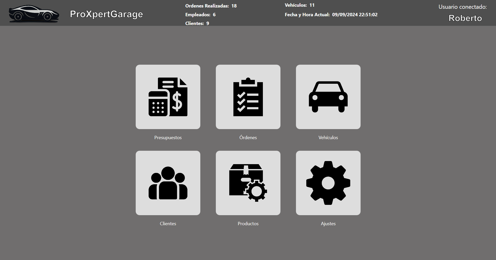
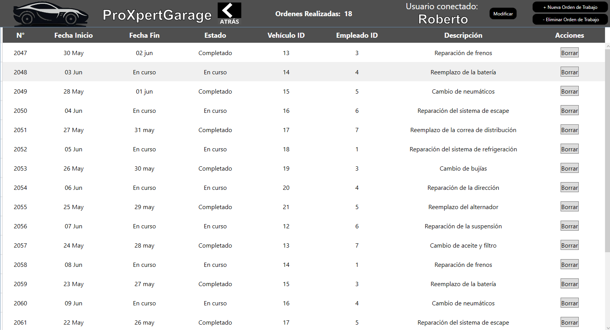
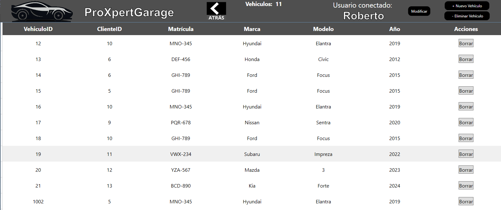
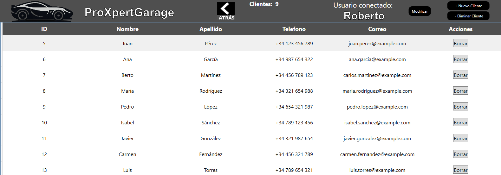
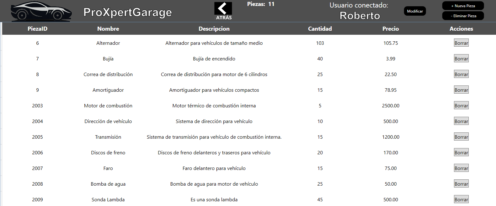

Sobre Mí
Soy un desarrollador backend con experiencia en la creación de aplicaciones en WPF, consola y creación de páginas web. Cuento con un certificado en C# validado por Microsoft y FreeCodeCamp.
Cuento con la capacidad de trabajo en equipo, resolución de problemas y adaptación rápida además de muchas ganas de seguir mejorando como programador.
Habilidades
- C#
- QML
- Java
- Flutter
- Kotlin
- Docker
- Hibernate
- Postgres
- JavaScript
- SQL y NoSQL
- XML y XAML
- ODOO
- ORM
- HTML
- Unity
- CSS
- GIT
Proyectos Destacados
ProXpertGarage
Aplicación de gestión de taller en WPF. Realizada en C# con el objetivo de proporcionar a los talleres un programa para la gestión eficiente de sus operaciones.
Ordenes
En este menú se almacenan las ordenes de trabajo que se realizan en el taller. En cada Orden se almacena su fecha de inicio, fecha fin, estado, ID del vehículo, ID del empleado, ID de la orden y descripción además de un boton de borrado.
En la esquina superior derecha se encuentran tres botones: modificar, nueva orden de trabajo y eliminar orden de trabajo.
Presupuestos
En este menú se almacenan los presupuestos que se realizan en el taller. En cada presupuesto se almacena su ID del vehículo, ID del empleado, fecha estaado, total, ID del presupuesto además de un boton de borrado.
En la esquina superior derecha se encuentran tres botones: modificar, nuevo presupuesto de trabajo y eliminar presupuesto de trabajo.

Menus restantes
Esta misma estructura de menus siguen los menus de vehículos, clientes y productos.
Vehículos
Clientes
Productos
 Ver ProyectoNdupcopy
Aplicación de eliminación de archivos duplicados en consola.